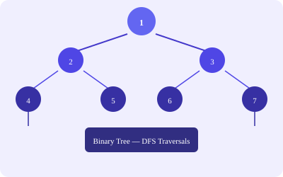

// Inorder (left → root → right)
def inorder(root):
if not root: return
inorder(root.left)
print(root.val)
inorder(root.right)
// Iterative inorder using stack
def inorder_iterative(root):
stack, res = [], []
curr = root
while curr or stack:
while curr:
stack.append(curr)
curr = curr.left
curr = stack.pop()
res.append(curr.val)
curr = curr.right
return resdef maxDepth(root):
if not root: return 0
return 1 + max(maxDepth(root.left), maxDepth(root.right))def lowestCommonAncestor(root, p, q):
while root:
if p.val < root.val and q.val < root.val:
root = root.left
elif p.val > root.val and q.val > root.val:
root = root.right
else:
return root| Problem | Pattern | Complexity |
|---|---|---|
| Symmetric Tree | Recursive mirror check | O(n), O(h) |
| Path Sum | DFS, target -= val | O(n), O(h) |
| Serialize/Deserialize | Level-order or preorder + queue | O(n), O(n) |
| BST Validate | Inorder traversal, check sorted | O(n), O(h) |